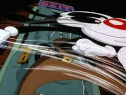
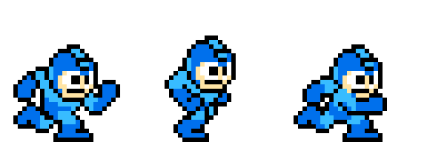

Animatietechnieken
De animatiewereld zit vol met uitbundige technieken om de wereld nog meer tot leven te laten komen. Zo zorgen bepaalde technieken voor extra energie en snelheid in de animatie, en anderen weer voor extra diepte in de wereld. Op deze pagina gaan we een paar animatietechnieken laten zien en uitleggen.
Om karakters extra energiek en snel te maken, gebruikten animators smear en dynamische houdingen. Smear is een Engels woord dat iets zoals smeer betekent. Dit heet zo, omdat de animatie voor een paar Frames er helemaal uitgesmeerd uitziet. Als je dit snel afspeelt, dan zie je daar niks van en lijkt het gewoon alsof het karakter snel beweegt. Deze frames kunnen er overigens wel raar uitzien als de animatie langzaam afspeelt.
Een andere manier is door veel dynamische houdingen te gebruiken. Overdrijf de manier waarop ze dingen doen veel, Zo is rennen bijvoorbeeld heel overdreven wild vormgegeven in animatie. Het lijkt alsof het karakters zijn benen er zowat afrent. Vroeger hadden animators niet veel frames om een bepaalde houding te laten zien, maar met dynamiek konden ze snel laten zien wat ze bedoelde. Zo hadden oude videogames als Megaman 3 frames voor een ren animatie, maar toch kon je zien dat hij rende binnen die 3 frames.
Zie de afbeeldingen hieronder voor voorbeelden van deze technieken

Een smear in de Amerikaanse cartoon Animaniacs
